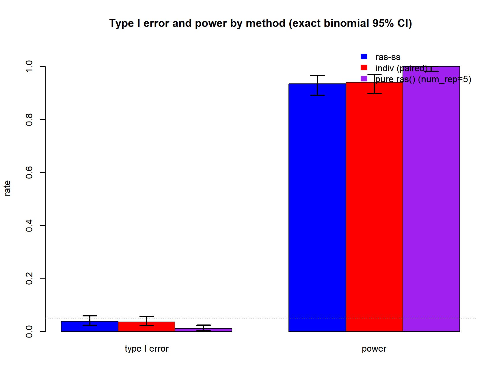
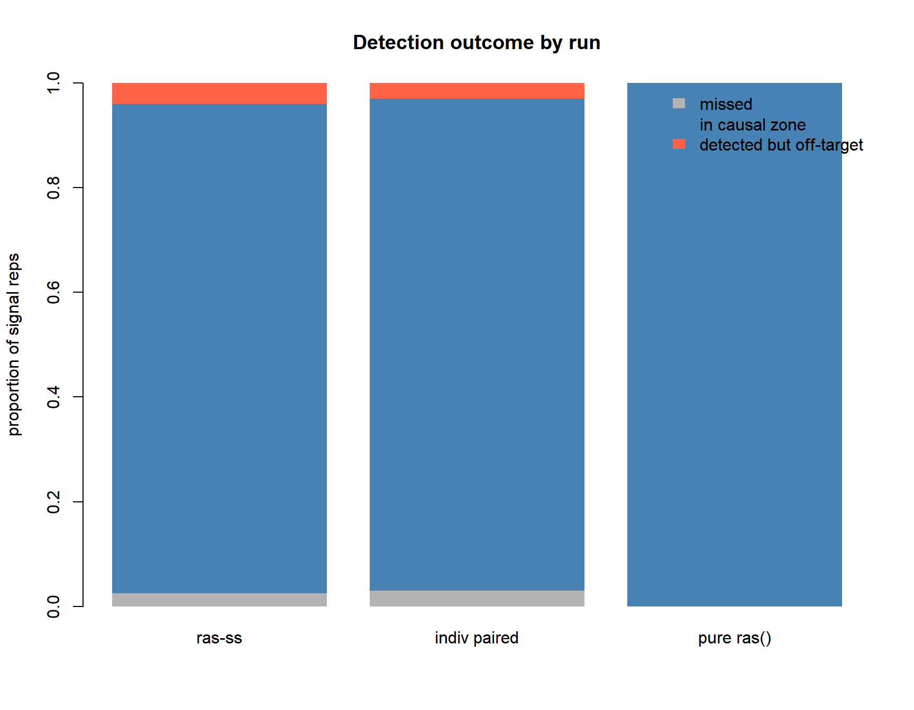
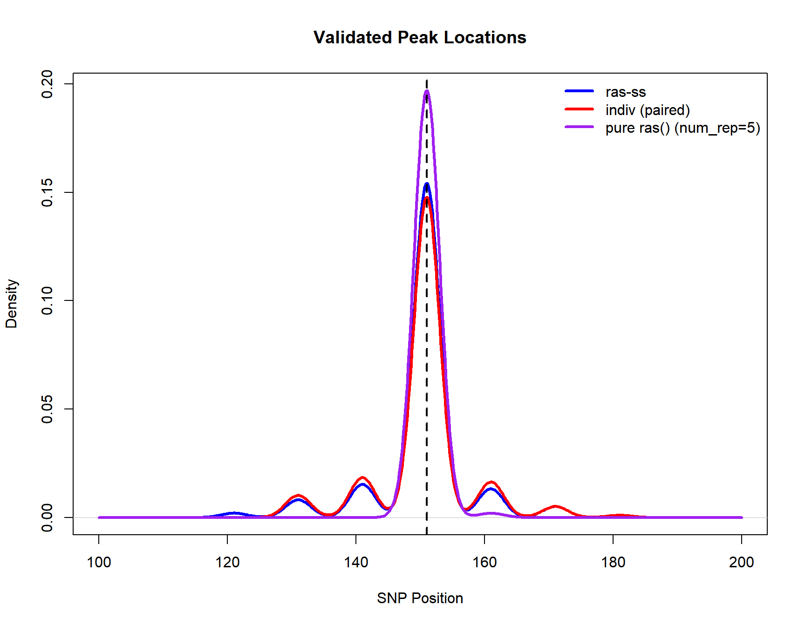

Last updated: 2026-08-13
Checks: 6 1
Knit directory: ras-ss/
This reproducible R Markdown analysis was created with workflowr (version 1.7.2). The Checks tab describes the reproducibility checks that were applied when the results were created. The Past versions tab lists the development history.
Great! Since the R Markdown file has been committed to the Git repository, you know the exact version of the code that produced these results.
Great job! The global environment was empty. Objects defined in the global environment can affect the analysis in your R Markdown file in unknown ways. For reproduciblity it’s best to always run the code in an empty environment.
The command set.seed(20260710) was run prior to running
the code in the R Markdown file. Setting a seed ensures that any results
that rely on randomness, e.g. subsampling or permutations, are
reproducible.
Great job! Recording the operating system, R version, and package versions is critical for reproducibility.
To ensure reproducibility of the results, delete the cache directory
02_simulation_cache and re-run the analysis. To have
workflowr automatically delete the cache directory prior to building the
file, set delete_cache = TRUE when running
wflow_build() or wflow_publish().
Great job! Using relative paths to the files within your workflowr project makes it easier to run your code on other machines.
Great! You are using Git for version control. Tracking code development and connecting the code version to the results is critical for reproducibility.
The results in this page were generated with repository version 90cbf4f. See the Past versions tab to see a history of the changes made to the R Markdown and HTML files.
Note that you need to be careful to ensure that all relevant files for
the analysis have been committed to Git prior to generating the results
(you can use wflow_publish or
wflow_git_commit). workflowr only checks the R Markdown
file, but you know if there are other scripts or data files that it
depends on. Below is the status of the Git repository when the results
were generated:
Ignored files:
Ignored: .Rhistory
Ignored: .Rproj.user/
Ignored: analysis/01_simulation_cache/
Ignored: analysis/02_simulation_cache/
Ignored: analysis/03_simulation_cache/
Unstaged changes:
Modified: analysis/_site.yml
Note that any generated files, e.g. HTML, png, CSS, etc., are not included in this status report because it is ok for generated content to have uncommitted changes.
These are the previous versions of the repository in which changes were
made to the R Markdown (analysis/02_simulation.Rmd) and
HTML (docs/02_simulation.html) files. If you’ve configured
a remote Git repository (see ?wflow_git_remote), click on
the hyperlinks in the table below to view the files as they were in that
past version.
| File | Version | Author | Date | Message |
|---|---|---|---|---|
| html | 920287b | Anson Li | 2026-08-13 | Build site. |
| Rmd | 3df293f | Anson Li | 2026-08-13 | commit changes |
| html | 3df293f | Anson Li | 2026-08-13 | commit changes |
| html | 4e4ce9c | Anson Li | 2026-08-07 | Build site. |
| Rmd | a38591c | Anson Li | 2026-08-07 | add error bar graph and time benchmarks |
| html | 210240a | Anson Li | 2026-08-07 | Build site. |
| Rmd | 600e301 | Anson Li | 2026-08-07 | add clearer and fair timing |
| html | 7cce52b | Anson Li | 2026-07-29 | Build site. |
| Rmd | f69a562 | Anson Li | 2026-07-29 | Add notes about knitr caching causing times that don’t represent full runtimes |
| html | 51545a0 | Anson Li | 2026-07-29 | Fix formatting issues and figures not appearing in 01_simulation |
| html | 911a882 | Anson Li | 2026-07-26 | rebuild site |
| html | 0b43cf0 | Anson Li | 2026-07-26 | Build site. |
| Rmd | e431eb4 | Anson Li | 2026-07-26 | improvements to simulation code and documentation clarity |
| html | e431eb4 | Anson Li | 2026-07-26 | improvements to simulation code and documentation clarity |
| Rmd | e5aa4d5 | Anson Li | 2026-07-25 | first version of 02_simulation |
| html | e5aa4d5 | Anson Li | 2026-07-25 | first version of 02_simulation |
| Rmd | 027c3c4 | Anson Li | 2026-07-25 | adding on fourth branch for pure authentic run w/ 5 reps |
| Rmd | bebd3f5 | Anson Li | 2026-07-25 | start moving functions out and prepare for more clear numerical simulation |
| html | bebd3f5 | Anson Li | 2026-07-25 | start moving functions out and prepare for more clear numerical simulation |
Paired-data validation on the 300-SNP toy. The main paper-style study is Paper Replication.
knitr::opts_chunk$set(echo = TRUE)
knitr::opts_chunk$set(autodep = TRUE)
library(mvtnorm)
library(RAS)
library(future.apply)Loading required package: futureplan(multisession)
start_time <- Sys.time()
source("code/ras_ss.R")# run config
n_snps <- 300
n_disc <- 1000 # discovery cohort, method A (small for speed)
n_targ <- 1000 # target cohort (small for speed)
rho <- 0.8 # AR(1) correlation for LD
skip1 <- 10
skip2 <- 3
min_window_size <- 3
max_window_size <- 30
prune_r2 <- 0.2 # LD pruning
causal_snps <- c(150, 151, 152)
effect_size <- 0.5
slope_thresh <- 1e-3
davies_thresh <- 1e-3
base_seed <- 35
best_ws <- 12 # chosen via the window-size sweep in 01_simulation
R_true <- outer(1:n_snps, 1:n_snps, function(i, j) rho^abs(i - j))
set.seed(base_seed)
X_ref <- sim_genotypes(10000, R_true)
R_emp <- cor(X_ref)
prune_filter <- prune_ld(R_emp, prune_r2)
cat("Surviving SNPs after LD pruning:", sum(prune_filter), "of", n_snps, "\n")
null_beta <- rep(0, n_snps)
signal_beta <- rep(0, n_snps)
signal_beta[causal_snps] <- effect_size
# did the validated peak land on the causal cluster (for power calculation)
in_zone <- function(tau) any(tau >= 130 & tau <= 170)# rows 1 & 2 share the same simulated data per rep (paired test);
# row 3 runs the pure ras() function with num_rep = 5 (true published default)
n_null <- 500
n_power <- 200
# rows 1 & 2: paired, same simulated data per rep
paired_null <- future_lapply(seq_len(n_null), function(s) suppressWarnings({
r <- one_rep(null_beta, seed = 100000 + s)
ind <- indiv_scan(r$scan, r$X_t, r$y_t, r$b_disc)
c(ss = length(detect_peaks(r$scan, best_ws, scw = 8)$val$tau_hats) > 0,
ind = length(detect_peaks(list(x = r$scan$x, y = ind), best_ws, scw = 8)$val$tau_hats) > 0)
}))
# for signal reps, also save profiles / tau positions for diag
paired_pow <- future_lapply(seq_len(n_power), function(s) suppressWarnings({
r <- one_rep(signal_beta, seed = 200000 + s)
ind <- indiv_scan(r$scan, r$X_t, r$y_t, r$b_disc)
ss_tau <- detect_peaks(r$scan, best_ws, scw = 8)$val$tau_hats
ind_tau <- detect_peaks(list(x = r$scan$x, y = ind), best_ws, scw = 8)$val$tau_hats
list(ss_zone = in_zone(ss_tau),
ind_zone = in_zone(ind_tau),
ss_tau = ss_tau,
ind_tau = ind_tau,
scan = r$scan,
ind_prof = ind)
}))
ss_n <- sapply(paired_null, `[`, "ss"); ind_n <- sapply(paired_null, `[`, "ind")
ss_p <- sapply(paired_pow, function(x) x$ss_zone);
ind_p <- sapply(paired_pow, function(x) x$ind_zone)
# run 3: pure ras() with num_rep = 5 (closest to original)
pure_n <- unlist(future_lapply(seq_len(n_null), function(s)
suppressWarnings(length(detect_peaks(native_run_via_ras(null_beta, 500000 + s),
best_ws, scw = 8)$val$tau_hats) > 0)))
pure_p_tau <- future_lapply(seq_len(n_power), function(s)
suppressWarnings(detect_peaks(native_run_via_ras(signal_beta, 600000 + s),
best_ws, scw = 8)$val$tau_hats))
pure_p <- sapply(pure_p_tau, in_zone)# per-rep runtime, single core, same reps for all three (fair algorithmic cost)
nb <- 10
bench <- function(f) mean(sapply(1:nb, function(s) system.time(f(s))["elapsed"]))
t_ras_ss <- bench(function(s) {
r <- one_rep(signal_beta, 900000 + s)
invisible(detect_peaks(r$scan, best_ws, scw = 8))
})
t_ind <- bench(function(s) {
r <- one_rep(signal_beta, 910000 + s)
invisible(detect_peaks(list(x = r$scan$x,
y = indiv_scan(r$scan, r$X_t, r$y_t, r$b_disc)),
best_ws, scw = 8))
})
t_pure_b <- bench(function(s) {
invisible(detect_peaks(native_run_via_ras(signal_beta, 920000 + s), best_ws, scw = 8))
})# format for table
fmt <- function(k, n) {
b <- binom.test(sum(k), n)$conf.int
sprintf("%.3f (%.3f-%.3f)", mean(k), b[1], b[2])
}
knitr::kable(data.frame(
row = c("ras-ss", "indiv (same data, paired)", "indiv (pure ras(), num_rep=5)"),
type1 = c(fmt(ss_n, n_null), fmt(ind_n, n_null), fmt(pure_n, n_null)),
power = c(fmt(ss_p, n_power), fmt(ind_p, n_power), fmt(pure_p, n_power)),
time = sprintf("%.2f s/rep", c(t_ras_ss, t_ind, t_pure_b)),
reps = c(paste0(n_null, " / ", n_power),
paste0(n_null, " / ", n_power),
paste0(n_null, " / ", n_power))
), caption = "Method comparison -- point estimate (exact binomial 95% CI), single-core sec/rep")| row | type1 | power | time | reps |
|---|---|---|---|---|
| ras-ss | 0.038 (0.023-0.059) | 0.935 (0.891-0.965) | 2.11 s/rep | 500 / 200 |
| indiv (same data, paired) | 0.036 (0.021-0.056) | 0.940 (0.898-0.969) | 2.88 s/rep | 500 / 200 |
| indiv (pure ras(), num_rep=5) | 0.010 (0.003-0.023) | 1.000 (0.982-1.000) | 4.53 s/rep | 500 / 200 |
# ras-ss seeds are unchanged, so this must reproduce 0.038 / 0.935
cat(sprintf("ras-ss repro check: type1 = %.3f (expect 0.038), power = %.3f (expect 0.935)\n",
mean(ss_n), mean(ss_p)))ras-ss repro check: type1 = 0.038 (expect 0.038), power = 0.935 (expect 0.935)# NOTE: time with knitr caching
cat(sprintf("Total knitting time: %.1f minutes\n",
as.numeric(difftime(Sys.time(), start_time, units = "mins"))))Total knitting time: 0.0 minutes# plot 0: the three-run comparison, w/ exact binomial 95% CI error bars
t1_counts <- c(sum(ss_n), sum(ind_n), sum(pure_n))
pw_counts <- c(sum(ss_p), sum(ind_p), sum(pure_p))
t1_ci <- sapply(t1_counts, function(k) binom.test(k, n_null)$conf.int)
pw_ci <- sapply(pw_counts, function(k) binom.test(k, n_power)$conf.int)
heights <- cbind(`type I error` = t1_counts / n_null,
power = pw_counts / n_power)
rownames(heights) <- c("ras-ss", "indiv (paired)", "pure ras()")
lo_mat <- cbind(`type I error` = t1_ci[1, ], power = pw_ci[1, ])
hi_mat <- cbind(`type I error` = t1_ci[2, ], power = pw_ci[2, ])
bp <- barplot(heights, beside = TRUE, col = c("blue", "red", "purple"),
ylim = c(0, 1.08), ylab = "rate",
main = "Type I error and power by method (exact binomial 95% CI)")
for (i in 1:3) for (j in 1:2) {
segments(bp[i, j], lo_mat[i, j], bp[i, j], hi_mat[i, j], lwd = 2)
segments(bp[i, j] - 0.12, lo_mat[i, j], bp[i, j] + 0.12, lo_mat[i, j], lwd = 2)
segments(bp[i, j] - 0.12, hi_mat[i, j], bp[i, j] + 0.12, hi_mat[i, j], lwd = 2)
}
abline(h = 0.05, lty = 3, col = "gray50")
legend("topright", fill = c("blue", "red", "purple"), border = NA, bty = "n",
legend = c("ras-ss", "indiv (paired)", "pure ras() (num_rep=5)"))
# plot 1: detection outcome per run
outcome <- function(tau_list) {
miss <- sapply(tau_list, function(t) length(t) == 0)
inz <- sapply(tau_list, in_zone)
c(missed = mean(miss), in_zone = mean(inz), off_target = mean(!miss & !inz))
}
o <- rbind(`ras-ss` = outcome(lapply(paired_pow, function(x) x$ss_tau)),
`indiv paired` = outcome(lapply(paired_pow, function(x) x$ind_tau)),
`pure ras()` = outcome(pure_p_tau))
barplot(t(o), col = c("grey70", "steelblue", "tomato"), border = NA,
ylab = "proportion of signal reps", main = "Detection outcome by run",
ylim = c(0, 1))
legend("topright", fill = c("grey70", "steelblue", "tomato"), border = NA,
legend = c("missed", "in causal zone", "detected but off-target"), bty = "n")
# plot 2: where the validated peak landed, all three runs
ss_taus <- unlist(lapply(paired_pow, function(x) x$ss_tau))
ind_taus <- unlist(lapply(paired_pow, function(x) x$ind_tau))
pure_taus <- unlist(pure_p_tau)
bw_use <- 2 # shared
d_ss <- density(ss_taus, bw = bw_use, from = 100, to = 200)
d_ind <- density(ind_taus, bw = bw_use, from = 100, to = 200)
d_pure <- density(pure_taus, bw = bw_use, from = 100, to = 200)
plot(d_ss, col = "blue", lwd = 3, ylim = c(0, max(d_ss$y, d_ind$y, d_pure$y)),
main = "Validated Peak Locations", xlab = "SNP Position")
lines(d_ind, col = "red", lwd = 3)
lines(d_pure, col = "purple", lwd = 3)
abline(v = 151, lty = 2, lwd = 2)
legend("topright", c("ras-ss", "indiv (paired)", "pure ras() (num_rep=5)"),
col = c("blue", "red", "purple"), lwd = 3, bty = "n")
| Version | Author | Date |
|---|---|---|
| 210240a | Anson Li | 2026-08-07 |
sessionInfo()R version 4.6.0 (2026-04-24 ucrt)
Platform: x86_64-w64-mingw32/x64
Running under: Windows 11 x64 (build 29639)
Matrix products: default
LAPACK version 3.12.1
locale:
[1] LC_COLLATE=Spanish_Latin America.utf8
[2] LC_CTYPE=Spanish_Latin America.utf8
[3] LC_MONETARY=Spanish_Latin America.utf8
[4] LC_NUMERIC=C
[5] LC_TIME=Spanish_Latin America.utf8
time zone: America/Chicago
tzcode source: internal
attached base packages:
[1] stats graphics grDevices utils datasets methods base
other attached packages:
[1] future.apply_1.20.2 future_1.75.0 RAS_0.1.12
[4] mvtnorm_1.4-2 workflowr_1.7.2
loaded via a namespace (and not attached):
[1] jsonlite_2.0.0 compiler_4.6.0 promises_1.5.0 Rcpp_1.1.2
[5] stringr_1.6.0 git2r_0.36.2 parallel_4.6.0 callr_3.8.0
[9] later_1.4.8 jquerylib_0.1.4 globals_0.19.1 splines_4.6.0
[13] yaml_2.3.12 fastmap_1.2.0 lattice_0.22-9 R6_2.6.1
[17] knitr_1.51 MASS_7.3-66 tibble_3.3.1 rprojroot_2.1.1
[21] bslib_0.11.0 pillar_1.11.1 rlang_1.3.0 cachem_1.1.0
[25] stringi_1.8.7 httpuv_1.6.17 xfun_0.60 getPass_0.2-4
[29] fs_2.1.0 sass_0.4.10 segmented_2.2-1 otel_0.2.0
[33] cli_3.6.6 magrittr_2.0.5 grid_4.6.0 digest_0.6.39
[37] processx_3.9.0 rstudioapi_0.19.0 nlme_3.1-170 lifecycle_1.0.5
[41] vctrs_0.7.3 evaluate_1.0.5 glue_1.8.1 listenv_1.0.0
[45] whisker_0.4.1 codetools_0.2-20 parallelly_1.48.0 rmarkdown_2.31
[49] httr_1.4.8 tools_4.6.0 pkgconfig_2.0.3 htmltools_0.5.9